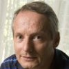

| Tommaso de Fernex University of Utah |
| Lawrence Ein University of Illinois at Chicago |
| Christopher Hacon1 University of Utah |
|  | James McKernan University of California at San Diego |
| Mircea Mustaţă University of Michigan |
| Karl Schwede University of Utah |
| Robert Lazarsfeld Stony Brook University |
| Chenyang Xu2 Beijing International Center of Mathematics Research |